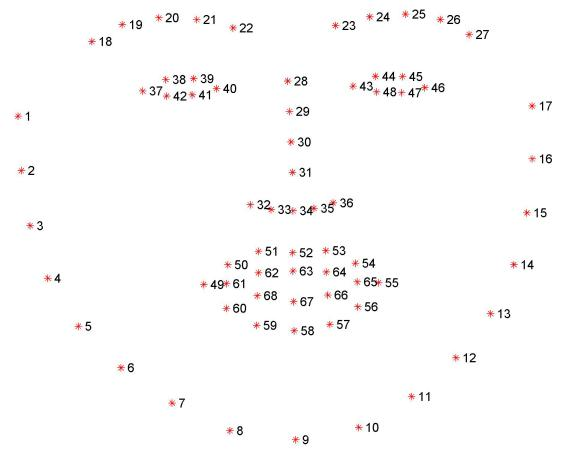

Facial Keypoint Detection
This project will be all about defining and training a convolutional neural network to perform facial keypoint detection, and using computer vision techniques to transform images of faces.
Let’s take a look at some examples of images and corresponding facial keypoints.

Facial keypoints (also called facial landmarks) are the small magenta dots shown on each of the faces in the image above. In each training and test image, there is a single face and 68 keypoints, with coordinates (x, y), for that face. These keypoints mark important areas of the face: the eyes, corners of the mouth, the nose, etc. These keypoints are relevant for a variety of tasks, such as face filters, emotion recognition, pose recognition, and so on. This keypoint extraction project is part of the Udacity Computer Vision Nanodegree. Here they are, numbered, and you can see that specific ranges of points match different portions of the face.

TL;DR
In this project, we defined and trained a CNN to identify and extract facial keypoints, founded in the YouTube Faces Dataset. Coded using Python and Pytorch, first we get familiar with the dataset and do all the processing and transformation using torch.utils.data.Dataset and torch.utils.data.Dataloader. Using a Custom LeNet-5 Architecture, we trained a model to identify such keypoints in the faces located by a OpenCV’s pre-trained Haar Cascade classifier. Code and tutorial here.
The Dataset
The first step in working with any dataset is to become familiar with your data; we’ll need to load in the images of faces and their keypoints and visualize them! This set of image data has been extracted from the YouTube Faces Dataset, which includes videos of people in YouTube videos. These videos have been fed through some processing steps and turned into sets of image frames containing one face and the associated keypoints.
Training and Testing Data
This facial keypoints dataset consists of 5770 color images. All of these images are separated into either a training or a test set of data.
- 3462 of these images are training images, to create a model to predict keypoints.
- 2308 are test images, which will be used to test the accuracy of the model.
The information about the images and keypoints in this dataset are summarized in CSV files, which we can read in using pandas. When we read the training CSV and get the annotations, they are in an (N, 2) array where N is the number of keypoints and 2 is the dimension of the keypoint coordinates (x, y).
Below, in an output from the function show_keypoints that takes in an image and keypoints and displays them. As you look at this data, note that these images are not all of the same size, and neither are the faces! To eventually train a neural network on these images, we’ll need to standardize their shape.
In this project, to prepare our data for training, we used PyTorch’s Dataset class. Much of this this code is a modified version of what can be found in the PyTorch data loading tutorial.
Dataset class
torch.utils.data.Dataset is an abstract class representing a dataset. This class will allow us to load batches of image/keypoint data, and uniformly apply transformations to our data, such as rescaling and normalizing images for training a neural network.
Our custom dataset should inherit Dataset and override the following methods:
__len__so thatlen(dataset)returns the size of the dataset.__getitem__to support the indexing such thatdataset[i]can be used to get the i-th sample of image/keypoint data.
Here we create a dataset class for our face keypoints dataset. We read the CSV file in __init__ but leave the reading of images to __getitem__. This is memory efficient because all the images are not stored in the memory at once but read as required.
A sample of our dataset will be a dictionary {'image': image, 'keypoints': key_pts}. Our dataset will take an
optional argument transform so that any required processing can be applied on the sample.
class FacialKeypointsDataset(Dataset):
"""Face Landmarks dataset."""
def __init__(self, csv_file, root_dir, transform=None):
"""
Args:
csv_file (string): Path to the csv file with annotations.
root_dir (string): Directory with all the images.
transform (callable, optional): Optional transform to be applied
on a sample.
"""
self.key_pts_frame = pd.read_csv(csv_file)
self.root_dir = root_dir
self.transform = transform
def __len__(self):
return len(self.key_pts_frame)
def __getitem__(self, idx):
image_name = os.path.join(self.root_dir,
self.key_pts_frame.iloc[idx, 0])
image = mpimg.imread(image_name)
# if image has an alpha color channel, get rid of it
if(image.shape[2] == 4):
image = image[:,:,0:3]
key_pts = self.key_pts_frame.iloc[idx, 1:].as_matrix()
key_pts = key_pts.astype('float').reshape(-1, 2)
sample = {'image': image, 'keypoints': key_pts}
if self.transform:
sample = self.transform(sample)
return sample
After we’ve defined this class, we can instantiate the dataset and display some images.
Transforms
Now, the images in this dataset are not of the same size, and neural networks often expect images that are standardized; a fixed size, with a normalized range for color ranges and coordinates, and (for PyTorch) converted from numpy lists and arrays to Tensors.
Therefore, we will need to write some pre-processing code. The following four transforms were created:
Normalize: to convert a color image to grayscale values with a range of [0,1] and normalize the keypoints to be in a range of about [-1, 1]Rescale: to rescale an image to a desired size.RandomCrop: to crop an image randomly.ToTensor: to convert numpy images to torch images.
We will write them as callable classes instead of simple functions so that parameters of the transform need not be passed everytime it’s called. For this, we just implemented __call__ method and (if we require parameters to be passed in), the __init__ method. We can then use a transform like this:
tx = Transform(params)
transformed_sample = tx(sample)
Observe below how these transforms are generally applied to both the image and its keypoints. Let’s test these transforms out to make sure they behave as expected. As you look at each transform, note that, in this case, order does matter. For example, you cannot crop a image using a value smaller than the original image (and the original images vary in size!), but, if you first rescale the original image, you can then crop it to any size smaller than the rescaled size.
After creating the transformed dataset, applying the transforms in order to get grayscale images of the same shape, verify that your transform works, we used torch.utils.data.DataLoader iterator which provides features like Batch the data, Shuffle the data and Load the data in parallel using multiprocessing workers.
Now that we load and transform the data, we are ready to build a neural network to train on this data.
The Convolutional Neural Network
After looking at the data we’re working with and, in this case, know the shapes of the images and of the keypoints, we can define a convolutional neural network that can learn from this data. Recall that CNN’s are defined by a few types of layers:
- Convolutional layers
- Maxpooling layers
- Fully-connected layers
PyTorch Neural Nets
To define a neural network in PyTorch, we define the layers of a model in the function __init__ and define the feedforward behavior of a network that employs those initialized layers in the function forward, which takes in an input image tensor, x. Also note that during training, PyTorch will be able to perform backpropagation by keeping track of the network’s feedforward behavior and using autograd to calculate the update to the weights in the network.
Best practice is to place any layers whose weights will change during the training process in __init__ and refer to them in the forward function; any layers or functions that always behave in the same way, such as a pre-defined activation function, should appear only in the forward function.
The model used in this project was a Custom LeNet-5 Architecture, which you can check in the repository under the file models.py, using 4 Convolutional Layers followed by a Poooling Layer and 2 Fully Connected. After reading the paper from NaimishNet, I realized, from Fig.21, that LeNet-5 had a good performance while with fewer layers than NaimishNet. I started if LeNet-5 and change it until reaching the final mode. Adding two more Conv. Layers, replacing AvgPool by MaxPool (since were more common use avg back then) and Tanh activations by ReLU, improvements made in this 20 years.
Net(
(conv1): Conv2d(1, 32, kernel_size=(5, 5), stride=(1, 1))
(conv2): Conv2d(32, 64, kernel_size=(5, 5), stride=(1, 1))
(conv3): Conv2d(64, 128, kernel_size=(5, 5), stride=(1, 1))
(conv4): Conv2d(128, 256, kernel_size=(5, 5), stride=(1, 1))
(pool): MaxPool2d(kernel_size=2, stride=2, padding=0, dilation=1, ceil_mode=False)
(fc1): Linear(in_features=25600, out_features=512, bias=True)
(fc2): Linear(in_features=512, out_features=136, bias=True)
)
Feature maps
Each CNN has at least one convolutional layer that is composed of stacked filters (also known as convolutional kernels). As a CNN trains, it learns what weights to include in it’s convolutional kernels and when these kernels are applied to some input image, they produce a set of feature maps. So, feature maps are just sets of filtered images; they are the images produced by applying a convolutional kernel to an input image. These maps show us the features that the different layers of the neural network learn to extract. For example, you might imagine a convolutional kernel that detects the vertical edges of a face or another one that detects the corners of eyes. You can see what kind of features each of these kernels detects by applying them to an image. One such example is shown below; from the way it brings out the lines in an the image, you might characterize this as an edge detection filter.
Training
To prepare for training, create a transformed dataset of images and keypoints. In PyTorch, a convolutional neural network expects a torch image of a consistent size as input. For efficient training, and so your model’s loss does not blow up during training, it is also suggested that you normalize the input images and keypoints. The necessary transforms have been defined in data_load.py.
Next, having defined the transformed dataset, we use PyTorch’s DataLoader class to load the training data in batches of whatever size as well as to shuffle the data for training the model. You can read more about the parameters of the DataLoader, in this documentation.
We also defined some functions:
- net_sample_output(): test how the network performs on the first batch of test data. It returns the images, the transformed images, the predicted keypoints (produced by the model), and the ground truth keypoints.
- show_all_keypoints(): displays a grayscale image, its predicted keypoints and its ground truth keypoints (if provided).
- visualize_output(): this function’s main role is to take batches of image and keypoint data (the input and output of your CNN), and transform them into numpy images and un-normalized keypoints (x, y) for normal display. The un-transformation process turns keypoints and images into numpy arrays from Tensors and it undoes the keypoint normalization done in the Normalize() transform; it’s assumed that you applied these transformations when you loaded your test data.
After testing the optimizer with Adam and SGD, I kept Adam because is faster and converges faster also. About the loss functions, MSE and L1Smooth had a similar performance with 5 epochs, so I kept because of the NaimishNet reference. In 60 epochs, the average loss was 0.000651, resulting in the following detection:
Face and Facial Keypoint detection
After you’ve trained a neural network to detect facial keypoints, you can then apply this network to any image that includes faces. The neural network expects a Tensor of a certain size as input and, so, to detect any face, we first have to do some pre-processing. The following image will be used for test.

Detect all faces in an image
Here used one of OpenCV’s pre-trained Haar Cascade classifiers, all of which can be found in the detector_architectures/ directory, to find any faces in your selected image. In the figure below, we loop over each face in the original image and draw a red square on each face (in a copy of the original image, so as not to modify the original). You can even add eye detections while using Haar detectors. An example of face detection is shown below.

Keypoint detection
Now, we loop over each detected face in an image (again!) only this time, you’ll transform those faces in Tensors that your CNN can accept as input images. First we convert the face from RGB to grayscale and normalize the grayscale image so that its color range falls in [0,1] instead of [0,255]. So we rescale the detected face to be the expected square size for your CNN (224x224, suggested) and reshape the numpy image into a torch image.
And finally, after each face has been appropriately converted into an input Tensor for your network to see as input, we apply our net to each face. The ouput should be the predicted the facial keypoints. These keypoints will need to be “un-normalized” for display, and we write a helper function like show_keypoints. We end up with an image like the following with facial keypoints that closely match the facial features on each individual face:
Would you like to receive the most important news and trends in AI in just one email every end of the month? Subscribe below and I’ll send you the 10 most important news in Artificial Intelligence
Subscribe to Edge AI Guru
Get the latest posts delivered right to your inbox